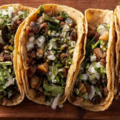
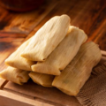
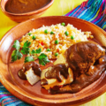
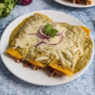
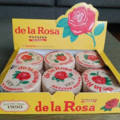
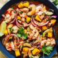
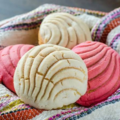
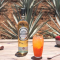

La gastronomía de México es un mosaico de sabores, olores y tradiciones milenarias que fusiona la herencia prehispánica del maíz, el frijol y el chile con las influencias europeas. Su relevancia cultural es tan inmensa que en el año 2010 fue declarada como "Patrimonio Cultural Inmaterial de la Humanidad por la UNESCO", siendo una de las primeras cocinas del mundo en recibir esta distinción. Este reconocimiento global se debe a la preservación de sus técnicas agrícolas originarias, sus complejos métodos de preparación e ingredientes autóctonos que han conquistado paladares internacionales, convirtiendo al acto de comer en un ritual festivo de identidad nacional.

Tacos

Tamales
Tortas

Mole

Enchiladas
Antojitos

Dulces

Mariscos

Pan

Bebidas
| # | Platillo | Variedades |
|---|---|---|
| 1 | Tacos |
|
| 2 | Tamales |
|
| 3 | Tortas tradicionales |
|
| 4 | Moles |
|
| 5 | Enchiladas |
|
| 6 | Antojitos de masa |
|
| 7 | Dulces tradicionales |
|
| 8 | Ceviches y mariscos |
|
| 9 | Pan dulce tradicional |
|
| 10 | Bebidas tradicionales |
|